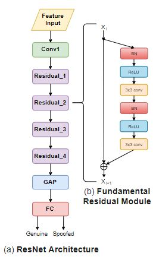
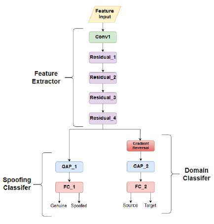
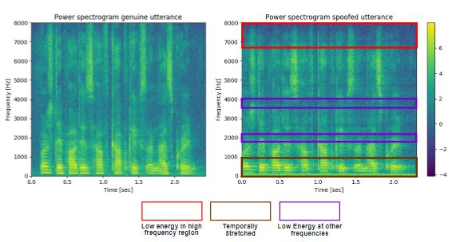
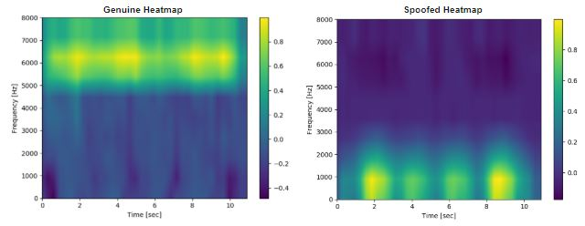

Thesis Project
Deep Learning approaches for Voice Presentation Attack Detection in Automatic Speaker Verification
Background
I completed my undergraduate thesis in 2019 under the supervision of Professor Julien Epps at the University of New South Wales. My undergraduate thesis investigates the use of deep learning frameworks to detect Voice Presentation Attacks (VPAs) also known as spoofing attacks such as Speech Synthesis (SS), Voice Conversion (VC) and Replay attacks. The aim is to detect imposters who may use these spoofing attacks to get authenticated by a Speaker Verification system. On this page, I attempt to provide a summary of the work completed in this thesis.
The biggest challenge facing state-of-the-art Presentation Attack Detection (PAD) systems is their inability to generalise to detecting new kinds of VPAs. Many PAD systems fail to detect SS or VC attacks which use a method the PAD is not trained for (unknown method) or are unable to detect a replay attack in a different recording session. Many systems also use prior knowledge about the development of the spoofing technique to detect and deflect attacks, which is not suitable in practical scenarios where knowledge about a specific spoofing technique won’t be known ahead of time. State-of-the-art PAD systems were developed to tackle either SS/VC or Replay attacks, not both and thus fail to generalise across spoofing classes.
Thesis Scope and Aim
In order for PAD systems to be adopted by industry they must be able to generalise to detect new kinds of VPAs. Inspired by the success of deep learning approaches in both ASV and PAD systems, this thesis will focus on PAD systems built on a deep learning framework. Thus the aim of this thesis is to develop a PAD system built on a deep learning framework which generalises to detect diverse and previously unseen Voice Presentation Attacks. Accordingly this thesis explored four different frontend features, namely deep features, spectrograms, group delay and modified group delay features. It also explores four different backend classification architectures, namely the ResNet-18 and 34, ResNet with Attention Mechanism and the Attentive Filtering Network.
Proposed System
Through preliminary evaluation, two novel proposed systemwere selected with spectrogram features being fed to a ResNet-18 or ResNet-34 backend classifier. The ResNet architecture can be seen in the figure below.  Spectrogram were created using Python with the SciPy library. The backend system was developed in Python using the Keras/Tensorflow library.
Results
Both the ResNet-18 and ResNet-34 proposed systems were able to meet the aims of this thesis, with the ResNet-34 achieving significant reductions in EER (equal error rate) of 95.86% and 64.62% on the ASVspoof 2015 and 2017 V2 database respectively, relative to the CQCC-GMM baseline. When trained on all three spoofing classes, both proposed systems continued to outperform the baseline with the ResNet-18 architecture achieving a relative reduction in EER of 74.88% and 19.35% on the ASVspoof 2015 and 2017 V2 databases respectively. This thesis also explores the use of domain adversarial training (DAT) to further improve cross-corpus generalisability through the emergence of features that are discriminative for spoofing classification, but indistinguishable across databases. The neural network was modified to the following:  The network is first split into a feature extractor section (uptil the Residual_4 block), and spoofing classifier consisting of the global average pooling (GAP) layer and fully connected (FC) layer. The domain classifier is a duplicate copy of the spoofing detector with an additional gradient reversal layer (GRL) layer. The GRL is introduced to maximize the loss of the domain classifier. Note that training loss on the domain classifier can be calculated on both source domain and target domain utterances but loss on the spoofing classifier is only calculated on source domain utterances, as the target domain utterances are unlabelled (i.e. we don’t knowif they are genuine or spoofed signals). The proposed ResNet-18 architecture coupled with DAT, produced EER reductions of 50.69% and 63.32%, relative to the baseline, when trained on the ASVspoof 2017 and BTAS 2016 (Replay) databases respectively and evaluated on the other database.
Class Activation Map (CAM) Analysis
Through the use of Class Activation Maps, this thesis investigates the features the proposed system is learning, which allow it to discriminate between genuine and spoofed speech. In the figure below, two spectrograms are presented with the speaker saying the same utterance "birthday parties have cupcakes and ice cream", however the utterance used to produce the right spectrogram was passed through a replay device. The artefacts introduced by the replay device are highlighted in the spectrogram below:  Firstly we see the energy in the high frequency regions is lower in the spoofed spectrogram. This artefact could possibly been introduced due to the application of an anti-aliasing filter by the replay device. The temporal stretching seen in the lower frequencies is possibly due to reverberation effects. Using the CAM technique we can visualise the regions of the input feature the ResNet-18 classifier is using to discriminate between genuine and spoofed files:  The heatmaps seen above, were produced with the previously discussed spectrograms as inputs. For genuine heatmaps we see that the ResNet classifier emphasises high frequency regions consistently. The reason for this is because as discussed before, replay attacks tend to produced utterances with low energy in high frequency regions.Looking at spoofed utterances, the ResNet mainly emphasises low frequency regions consistently, possibly linked to the temporal stretching artefact commonly introduced by replay attacks.
Conclusion
Ultimately the work produced in this thesis is one of the most comprehensive evaluations of a PAD system, investigating its generalisability in both intra and inter-database scenarios. Furthermore the work presents a novel Spectrogram-ResNet (18 and 34) architecture which demonstrated an impressive ability to generalise to unseen VPAs. Implementing the PAD system proposed in this thesis alongside ASV systems, will greatly improve confidence in their ability to prevent malicious imposters gaining access to sensitive information.
Reflection
There was alot that was taken away from this thesis project. I learnt about various deep learning architectures and techniques, the use of signal processing techniques to extract features from raw wave audio data and overall learnt how to read literature in deep learning and PAD fields and then apply this knowledge to solve my own thesis problems. I hope to provide some insight and advice to incoming thesis students which I will post in my blog soon.
Further Details
For further details about this research please feel free to contact me here.